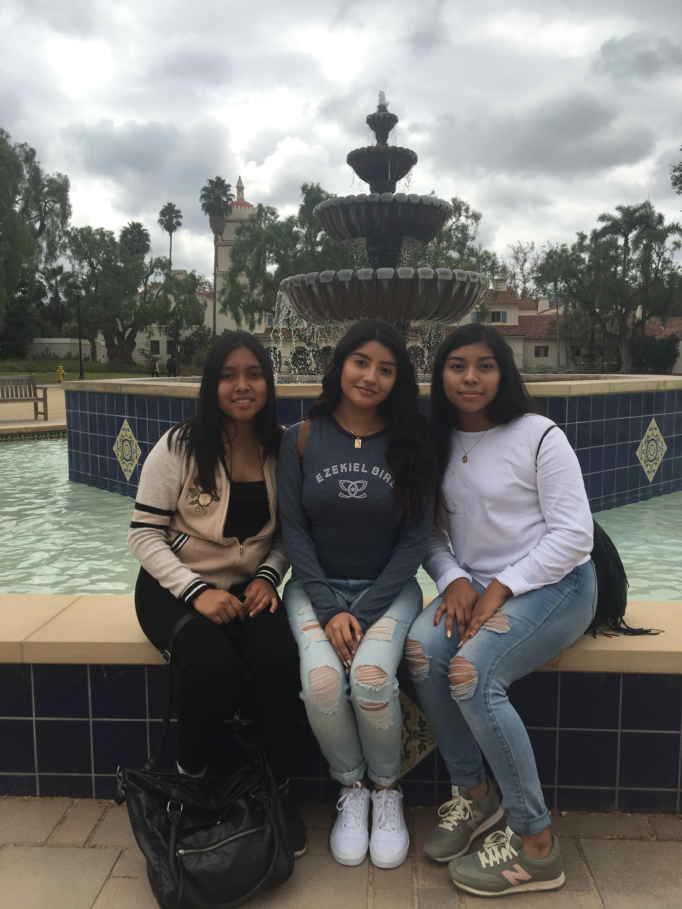
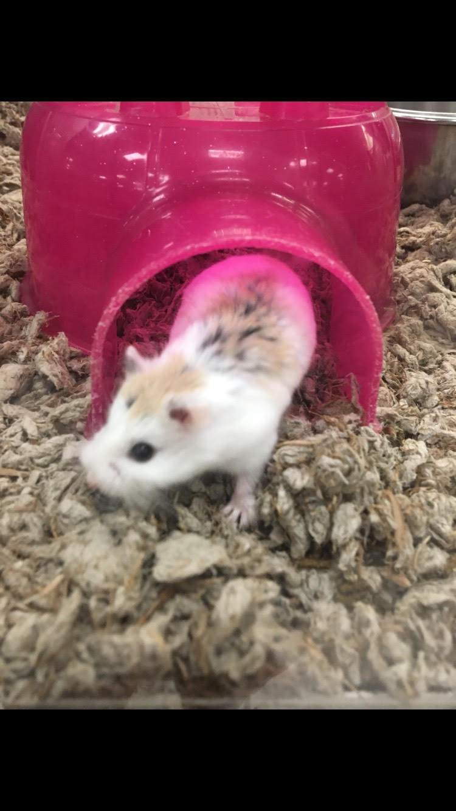
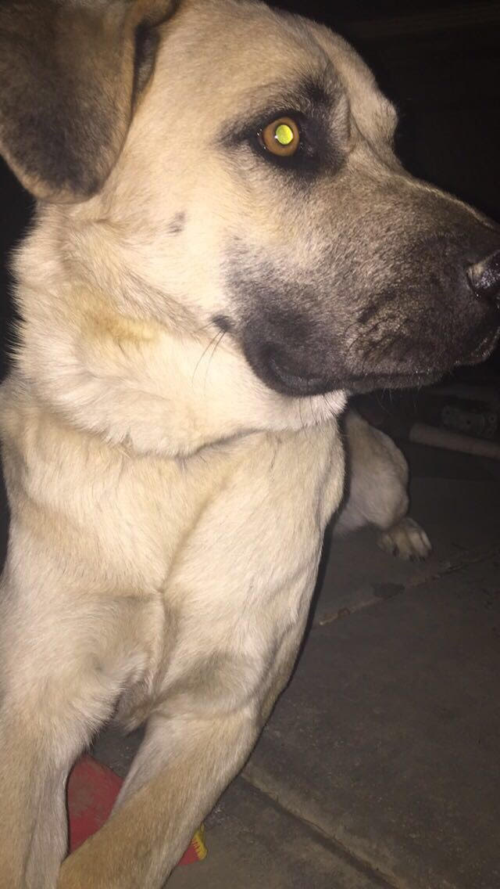
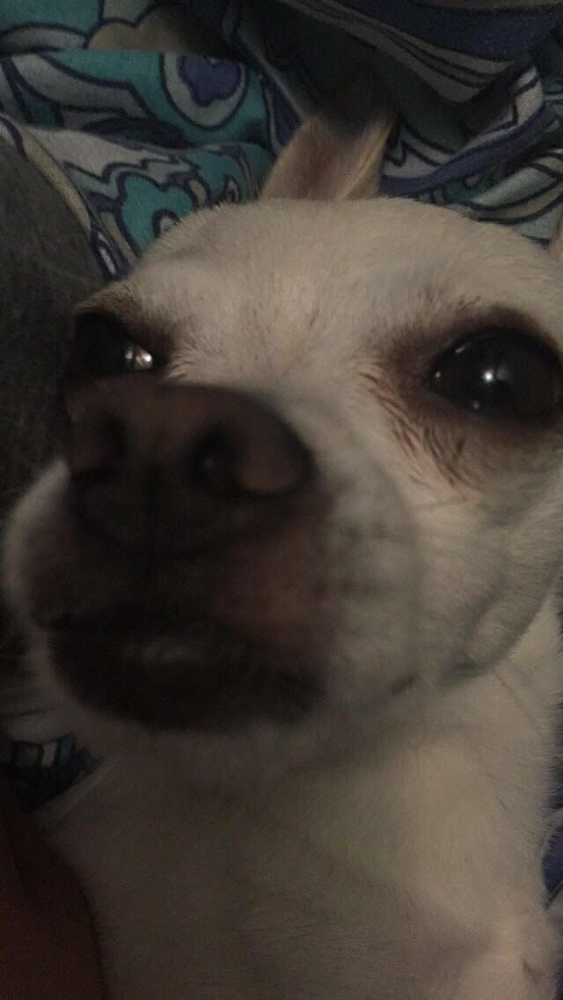

Home
Portfolio
About me!
Vocabulary
About me!
My name is Jazmine Martinez. I am 17 years old and currently attend Lancaster High School.
I enjoy reading, playing tennis, and hanging out with friends. I was born in Los Angeles, California.
My parents are from Mexico, Guatemala, and Spain. I have a dog named Sparky and another dog named Byson.
Over the summer I got a hamster and named him Remy after the movie Ratatouille.
My family consists of five people including myself. I have 2 older brothers. I am the youngest in my family.
I love being invloved in school. Which is why I am in 5 clubs.
I plan to go into nursing after I graduate highschool.



